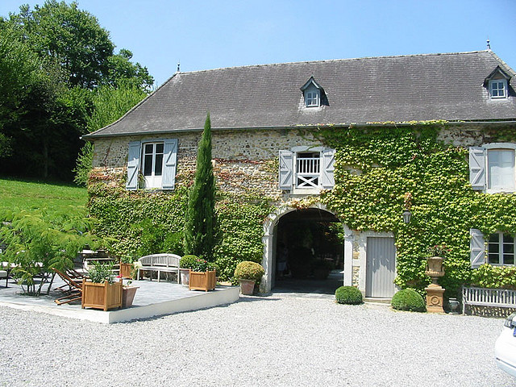

Nous vous proposons quatre chambres très spacieuses et très confortables, deux au rez de chaussée et deux à l'étage, toutes avec une décoration différente, agréable et reposante.
Notre maison de caractère régional, en briques rouges, se situe à la campagne dans un domaine viticole et boisé en plein coeur du Brabant Wallon .
Nous sommes labellisés GITES DE WALLONIE : 3 épis depuis 2005 et chambre de charme depuis 2012, reconnaissance de la qualité du confort et de l'accueil de notre maison.
Et sur réservation, notre table d'hôtes vous est également proposée le soir: cuisine traditionnelle et produits régionaux.
Natifs de cette région,nous nous ferons un plaisir de vous faire découvrir les nombreuses richesses naturelles et historiques qui nous entourent :( n'hésitez pas à consulter l'onglet Le Terroir )
Entrée indépendante, WI-FI gratuit et parking dans la propriété